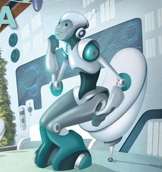

SUNDAY · 15 NOVEMBER
Today · Reading
قراءة صفحات ٦٢، ٦٣، ٦٤، ٦٥ من Student’s Book.
تقييم القراءة: صفحة ٦٢.
- Learn the important words.
- Listen to the small parts.
- Record your own reading.
- Try the ELSA questions.
SAKINAH’S ENGLISH NOTEBOOK
Read today. Discover yesterday.

62—65 / 67SUNDAY · 15 NOVEMBER
قراءة صفحات ٦٢، ٦٣، ٦٤، ٦٥ من Student’s Book.
تقييم القراءة: صفحة ٦٢.
MONDAY · 16 NOVEMBER
Student’s Book صفحة ٦٧: used to / didn’t use to.
الواجب: Activity Book صفحة ٥٤، سؤال ٢ و٣.
سؤال ٣ مكمل في الصفحة المقابلة ٥٥.
🎒 أحضري Student’s Book + Grammar Book + Activity Book.
YOUR MISSION
اسمعي، أعيدي الجملة، وسجّلي صوتك. اضغطي الكلمات المظللة لمعناها بالعربي والإنجليزي. تقدّمك محفوظ على هذا الجهاز.
A SMALL WORD COLLECTION
STUDENT’S BOOK · 62–65
Listen first, then record your reading.
MONDAY · STUDENT’S BOOK 67
نستخدم used to مع شيء كان يتكرر أو كان صحيحًا في الماضي، ولم يعد كذلك الآن.
I used to play with dolls.
I play computer games.
She used to play. ✓
She didn’t use to play. ✓
Did she use to play? ✓
وجود did / didn’t يرجّع use للشكل الأساسي، والفعل بعد to يكون أساسيًا أيضًا.
WRITE FIRST · CHECK SECOND
ابدئي بتدريب صفحة ٦٧، ثم واجب سؤال ٢ في صفحة ٥٤ وسؤال ٣ المكمل في صفحة ٥٥. اكتبي الإجابة ثم اضغطي Check. إجاباتك تُحفظ تلقائيًا.
ELSA + PAST HABITS · 28 QUESTIONS
إجابة واحدة لكل سؤال في الجولة. تقدرين تضعين علامة للمراجعة قبل الإجابة. أنهي التحدي لرؤية النتيجة والتصحيح.